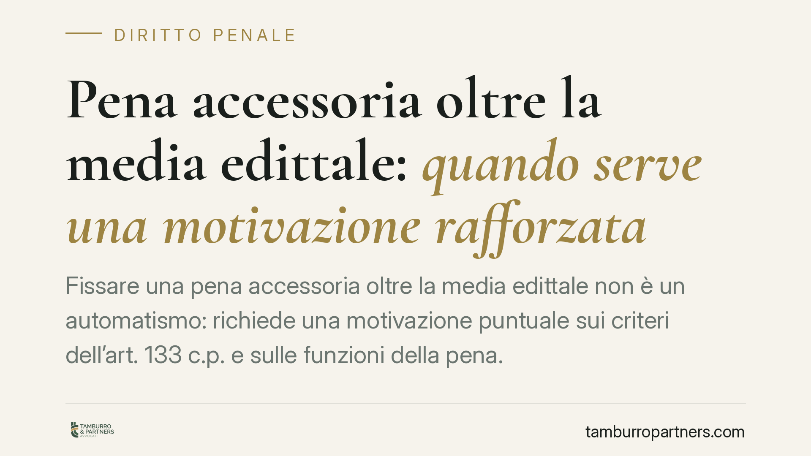

Pena accessoria oltre la media edittale: quando serve una motivazione rafforzata
Fissare una pena accessoria oltre la media edittale non è un automatismo: richiede una motivazione puntuale sui criteri dell'art. 133 c.p. e sulle funzioni della pena. Il tema torna al centro dell'attenzione della giurisprudenza penale e incide direttamente sulle interdizioni che condizionano la vita professionale del condannato.

Il tema
Le pene accessorie sono conseguenze automatiche o discrezionali della condanna che si affiancano alla pena principale: interdizioni dai pubblici uffici, dalla professione, incapacità di contrattare con la pubblica amministrazione, e così via. Sono spesso sottovalutate in fase di difesa, ma incidono in modo pesante e prolungato sulla vita lavorativa e civile di chi le subisce.
Una recente linea interpretativa della Cassazione penale insiste su un punto: quando la durata della pena accessoria viene fissata oltre la media edittale — cioè oltre il valore intermedio tra minimo e massimo previsti dalla legge — il giudice non può limitarsi a formule di stile. Serve una motivazione specifica e verificabile.
Inquadramento normativo
Il riferimento di base è l'art. 133 del codice penale, che indica i parametri di commisurazione della pena: la gravità del reato (elementi oggettivi) e la capacità a delinquere del reo (elementi soggettivi). Questi criteri governano in primo luogo la pena principale, ma orientano anche la discrezionalità sulle accessorie a durata variabile.
Sul punto è decisiva la sentenza n. 222/2018 della Corte costituzionale, che ha dichiarato illegittimo l'automatismo nella determinazione della durata di alcune pene accessorie, affermando che il giudice deve modularle in concreto secondo i criteri dell'art. 133 c.p. Ne discende un principio chiaro: dove la durata dell'accessoria è discrezionale, e non fissata rigidamente dalla legge, la scelta va motivata.
È qui che entra in gioco l'onere di motivazione rafforzata. La regola, consolidata per la pena principale (Sezioni Unite sull'applicazione dell'art. 133), impone che l'allontanamento dai valori medi verso l'alto sia giustificato con argomenti concreti. L'estensione alle pene accessorie a durata discrezionale è coerente con questo impianto: non riguarda invece quelle a durata fissa o predeterminata dalla legge, dove il giudice non ha margine di scelta.
Tutto ciò si salda con l'art. 27, comma 3, della Costituzione, che assegna alla pena una funzione rieducativa. Retribuzione, prevenzione e rieducazione devono trovare equilibrio anche nelle accessorie, che non possono essere afflittive oltre quanto necessario.
Il caso del concordato in appello
Un profilo delicato riguarda il concordato in appello (art. 599 bis c.p.p.), l'accordo tra difesa e procura sulla rideterminazione della pena. In questo procedimento la legge prevede una motivazione semplificata: il giudice ratifica sostanzialmente l'accordo delle parti.
Proprio per questo il difensore non può fare affidamento su un successivo controllo motivazionale approfondito. La coerenza della pena accessoria con i criteri edittali va verificata prima di aderire all'accordo, perché lo spazio di censura in Cassazione, a valle di un concordato, è ristretto. La semplificazione motivazionale del concordato, insomma, sposta l'onere di controllo sul momento della trattativa.
Implicazioni pratiche
Per l'imputato e per la difesa il punto è concreto. Una pena principale contenuta può accompagnarsi a un'interdizione professionale lunga, capace di produrre effetti più gravanti della detenzione stessa, specie per liberi professionisti, amministratori e dipendenti pubblici.
La distinzione tra pena principale e pena accessoria diventa quindi centrale: due determinazioni autonome, ciascuna con la propria giustificazione. Contestare solo la prima e trascurare la seconda è un errore ricorrente.
Cosa fare in concreto
- Verificare la dosimetria dell'accessoria: stabilire se la durata rientra nella media edittale o la supera, distinguendo tra accessorie a durata fissa e a durata discrezionale.
- Analizzare la motivazione della sentenza sul punto: individuare se il superamento della media è sorretto da argomenti specifici o da formule generiche.
- Documentare gli elementi soggettivi favorevoli — condotta successiva al reato, assenza di precedenti, contesto personale — utili a sostenere una durata contenuta.
- Nel concordato in appello è opportuno verificare, già in fase di accordo, che la pena accessoria proposta sia coerente con i criteri edittali, data la successiva motivazione semplificata.
- Impostare l'impugnazione in modo mirato, censurando in via autonoma il difetto di motivazione sull'accessoria a durata discrezionale.
La pena accessoria non è un dettaglio residuale della condanna: è una componente sanzionatoria autonoma, con effetti duraturi. Trattarla come tale, in giudizio e in impugnazione, è parte essenziale di una difesa attenta.
---
Contributo informativo a cura di Tamburro & Partners Avvocati. Non costituisce parere legale.
Ogni condominio ha una storia a sé.
Se gestisci un'amministrazione e vuoi un confronto su una specifica questione condominiale, scrivi allo studio. Ti rispondiamo entro un giorno lavorativo.